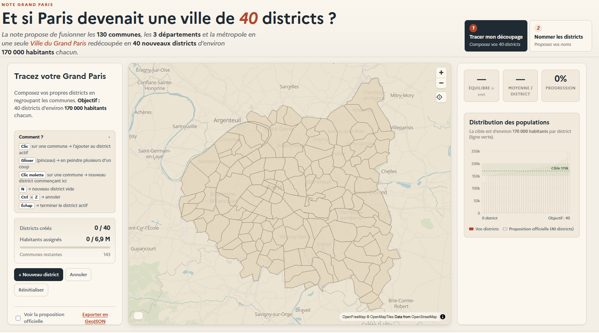
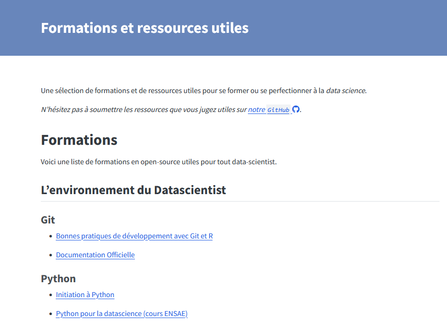

Bienvenue à la vingt sixième infolettre !
C’est l’été, la canicule a le droit d’arriver ! C’est la dernière infolettre avant la pause estivale, donc pour vous récompenser, elle est dense 😙.
L’infographie
Si vous avez joué à SimCity, voici la version parisienne. Le Haut-commissariat à la Stratégie et au Plan a accompagné sa note, proposant de fusionner toute la petite couronne et Paris au sein d’une ville du Grand Paris, d’un outil de visualisation permettant à chacun de créer cette nouvelle commune.

Si vous cherchez à créer 40 districts en région parisienne, le jeu est par ici.
Les évènements du réseau
Plusieurs événements du réseau ont eu lieu ces dernières semaines.
Retour sur le funathon consacré au machine learning et l’IA - 📅 27 et 28 mai
L’Insee a organisé un funathon européen portant sur l’utilisation du machine learning et de l’IA dans le cadre du projet européen ESS-Net AIML4OS. 215 personnes, réparties en 67 équipes et issues de 25 pays différents, ont participé et ont pu explorer l’un des trois sujets proposés. Les retours des participants sont très positifs : ils ont particulièrement apprécié le fait de pouvoir acquérir de nouvelles compétences à partir de cas d’usage concrets issus de la statistique publique.
Les ressources sont toujours disponibles en ligne, sur le site du funathon ou sur les sites dédiés à chaque sujet :
- Prévision des prix de l’immobilier sur données tabulaires par méthodes ensemblistes - sujet 1 ;
- Codification automatique pour la classification NACE - sujet 2 ;
- Segmentation d’images satellites par deep learning - sujet 3.
Que ce soit par curiosité, pour apprendre ou pour revivre l’expérience du funathon, n’hésitez pas à consulter les sujets !
Un retour d’expérience plus détaillé a par ailleurs été présenté à la conférence qualité lors de la session 21 et dont la présentation est disponible ici, si jamais vous voulez vous lancer dans une telle expérience 😜.
Retour sur les journées data-science et open source - 📅 16 et 17 juin
L’Insee a organisé les 16 et 17 juin deux journées pour démystifier la contribution à l’open source, explorer et contribuer à des projets liés à la data science. Rassemblant une vingtaine de participants issus de différentes administrations, ces journées ont permis de (re-)découvrir ensemble le monde de l’open source et d’apporter environ 80 contributions à des projets communs (Active Tigger, SNDSTools, CanaR, UtilitR, ainsi que des contributions libres à d’autres projets).
Au-delà des chiffres, ces deux jours ont surtout montré que la contribution à l’open source est accessible à tous et que les data scientists du service public ont toute leur place comme contributeurs actifs aux outils qu’ils utilisent.
Cela aura aussi été l’occasion de travailler autrement, tous ensemble, autour de projets concrets, une expérience qui a été très appréciée par les participants.
Merci à toutes celles et ceux qui ont participé — et rendez-vous pour une nouvelle édition l’année prochaine. Plus de détails sont disponibles sur la page de l’événement, le retex ou le site dédié.
Retour sur les rencontres R à Nantes - 📅 16 au 18 juin
Les 12e Rencontres R ont eu lieu à Nantes du 16 au 18 juin. Dans un billet de blog, on revient sur quelques présentations marquantes : rendre ses graphiques {ggplot2} réellement accessibles (Cara Thompson), faire du web depuis R sans Shiny avec l’écosystème hyperverse (Arthur Bréant), produire des PDF via Typst plutôt que LaTeX et étendre Quarto avec des filtres Lua (Christophe Dervieux & Maëlle Salmon), et enfin les enjeux liés à l’utilisation de R en production.
Du nouveau sur le site du réseau !
Le site du réseau s’enrichit d’une liste de formations en data science
Le site du réseau s’est enrichi d’une liste de formations librement accessibles et d’intérêt pour la data-science. Pour y accéder, il faut aller dans l’onglet “ressources”.

Et d’un article de blog pour créer un bot sur Tchap
Une gentille personne a expliqué sur le blog du réseau comment créer un bot sur Tchap connecté à un LLM.
En résumé, grâce à la philosophie ouverte de Tchap et à des outils comme simplematrixbotlib, la mise en place a été plus simple que prévu, malgré les défis liés au chiffrement et à la gestion des fils de discussion. Le bot est désormais capable de répondre à des commandes et d’interroger un LLM, même si la gestion des nouvelles discussions et de certains événements reste à implémenter. Une fois l’application conteneurisée avec Docker, le bot a pu être déployé en production sur le SSP Cloud, le tout en moins d’une semaine de travail.
Pour plus de détails, tout est expliqué sur l’article de blog.
Actualités
Beaucoup d’actualités dans les dernières semaines, j’essaye de rendre cela digeste.
Quel est le prix de l’indépendance statistique ? 25$ pour 1$
Des chercheurs ont utilisé le licenciement de la cheffe du Bureau of Labor Statistics (BLS) aux États-Unis pour mesurer, à partir de cette expérience naturelle, la valeur économique donnée aux statistiques publiques. Dans leur article The Value of Reliable Statistics publié dans la revue NBER, ils confirment ainsi que la perte de confiance dans les statistiques publiques produit de l’incertitude économique. Ils estiment aussi le bénéfice économique lié au maintien de l’intégrité des données officielles à 25$ par $ investi dans les statistiques publiques.
La consommation énergétique de LLMs grands modèles de langage (GML)
En ces temps de fraîcheur estivale, le PEReN a étudié la consommation énergétique de 22 modèles d’IA générative, comme présenté sur leur site. Selon leur étude, si les grands modèles étudiés consomment généralement plus, leur architecture et leur mode de fonctionnement jouent un rôle clé: l’utilisation d’une architecture « mélange d’experts » et de quantification diminuent ainsi le coût énergétique (de respectivement 45% et 39%) mais le mode “raisonnement”, qui améliore grandement l’efficacité du modèle en matière de code, est par contre bien plus énergivore (+92%). Il existe ainsi des modèles efficaces qui évitent de faire chauffer le compteur Linky.
Fun/formation
Formation
MicroGPT Visualized - Building a GPT from scratch — an interactive visual guide: Apprendre à construire un LLM simplifié en 6 étapes ;
Formation ouverte aux statistiques avec R: Formation aux statistiques avec R comprenant 8h de vidéos et des scripts R commentés, par Jean-Paul Maalouf.
Explications techniques
YAML? That’s Norway problem: Si vous êtes fan du langage YAML, cet article explique que ce n’est pas si facile avec le “Norway problem”: le code du pays (NO) étant traduit par “False” dans les premières versions du langage. Au détour, cela permet de se rendre compte de la complexité derrière la simplicité du langage en regardant l’évolution du langage YAML et les raisons de son succès aujourd’hui.
DuckDB Internals: Why is DuckDB Fast?: Analyse approfondie de l’architecture interne de DuckDB pour comprendre pourquoi il est si rapide (réponse : l’exécution in-process, le stockage en colonnes et l’optimisation SQL).
Ressources
Outils d’IA
RAG with raghilda: Une introduction à Raghilda, un package Python pour construire des RAG ;
ParseBench : Benchmark de parsing de documents pour agents IA: Présentation de ParseBench, un benchmark d’évaluation de parsing de documents orienté vers des agents IA.
curl.md : Convertir des sites web en markdown optimisé pour les agents: Outil permettant de transformer des pages web en format markdown optimisé pour les agents IA pour réduire la consommation de tokens et améliorer le contexte des LLM.
OpenAI Privacy Filter: Modèle de détection et d’anonymisation d’informations personnelles conçu pour fonctionner à haut débit et utilisable localement.
Your own AI workspace, running on your hardware.: Odysseus permet d’héberger des modèles localement, permettant de partager tout le contexte nécessaire avec les modèles et d’atteindre ainsi de meilleures performances.
Teaching agents the core skills of data science: Probabl publie sur GitHub des compétences (skills) pour agents IA afin qu’ils s’améliorent en data science. L’objectif est de former des agents capables de gérer des workflows de data science complexes et fiables.
duckDB
- Full-Text Search with DuckDB: Exploration de l’extension de recherche textuelle (FTS) de DuckDB avec un tutoriel sur l’indexation et l’utilisation de l’algorithme BM25 pour interroger des données textuelles comme des e-mails.
Git et souveraineté européenne
- The Netherlands is Building Its Own GitHub Replacement: Le gouvernement néerlandais déploie Forgejo, une plateforme auto-hébergée et open source, pour remplacer GitHub et GitLab. Cette initiative vise à garantir la souveraineté numérique et le contrôle total sur l’hébergement du code source gouvernemental.
R, Python, machine learning
Bringing OpenTelemetry to R in production: Intégration d’OpenTelemetry dans les packages R clés (Shiny, plumber2, etc.) pour l’observabilité en production, ce qui permet de collecter traces, logs et métriques sans modification du code via des variables d’environnement.
Supertree : visualisation interactive d’arbres de décision: Outil Python permettant de visualiser de manière interactive des arbres de décision dans Jupyter ou Colab. Compatible avec scikit-learn, XGBoost, LightGBM et ONNX.
Publication
Modernisation de la chaîne de production scientifique de l’OFCE: Transformation de la chaîne éditoriale de l’OFCE vers un flux industriel et automatisé par l’utilisation de Quarto, de R et de Git pour garantir la reproductibilité et une source unique de données et de vérité.
Migrating from Pagedown to Typst: Comparaison entre Pagedown et Typst pour la génération de rapports PDF. Typst offre une alternative plus rapide, intuitive et moderne via l’utilisation de Quarto.
Datatype — variable font that turns text into charts: Datatype est une nouvelle police qui permet de transformer des expressions textuelles en graphiques très facilement en html, sans JavaScript ni image 💫 . Ainsi, un simple
{l:20,40,70,50,90}va produire {l:20,40,70,50,90} et{b:30,70,50,90}va produire {b:30,70,50,90}.